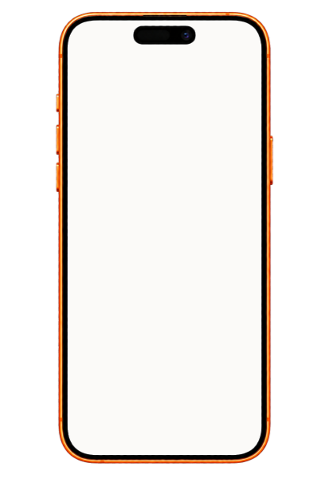
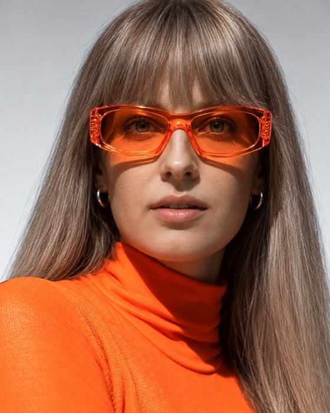
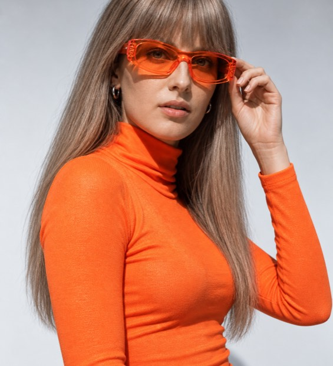

СЦЕНАРИИ СТОРИС ЗА ПАРУ МИНУТ✳ПРОГРЕВЫ БЕЗ ДАВЛЕНИЯ И МАНИПУЛЯЦИЙ✳СМЫСЛЫ, КОТОРЫЕ ПРОДАЮТ✳
СЦЕНАРИИ СТОРИС ЗА ПАРУ МИНУТ✳ПРОГРЕВЫ БЕЗ ДАВЛЕНИЯ И МАНИПУЛЯЦИЙ✳СМЫСЛЫ, КОТОРЫЕ ПРОДАЮТ✳
это приложение для тебя, если:
…открываешь сторис и не знаешь, о чём писать
Тем и мыслей много, а в сторис — каша или тишина. Приложение само предложит идею под твой день и разложит мысли в план.
…тратишь на сторис полдня
Придумать, написать, переписать… Здесь готовый сценарий появляется за пару минут — осталось снять.
…ведёшь сторис, а продаж нет
Продажи начинаются с доверия. Сторис выстраивают его шаг за шагом: аудитория узнаёт тебя, привыкает, начинает верить — и приходит покупать сама.
…боишься продавать и звучать навязчиво
Прогревы строятся через истории — без давления, манипуляций и постоянных «купи-купи».
…то ведёшь блог, то пропадаешь на месяц
Когда есть готовый сценарий на сегодня, регулярность перестаёт держаться на силе воли.
что умеет
stories мастер
ГОЛОСОВАЯ РАСПАКОВКА
Приложение задаёт вопросы, а ты отвечаешь голосом — никаких анкет на миллион пунктов.
Из ответов складывается твой профиль.
СЦЕНАРИИ СТОРИС НА КАЖДЫЙ ДЕНЬ
Приложение само пишет сторителлинги — личные, экспертные, продающие и вовлекающие.
С теми смыслами, которые ты хочешь донести, и на языке твоей аудитории — про её боли, желания и сомнения.
КОНТЕНТ-ПЛАН ИЗ «КАШИ МЫСЛЕЙ»
Составляет контент-план на неделю, две, три или четыре.
Просто вываливаешь все свои мысли в приложение — и получаешь структурный план выходов в сторис с готовыми сценариями. Двадцать тем в голове превращаются в контент на недели вперёд.
ПРОГРЕВ ПОД ЗАПУСК
Собирает прогрев на 3, 7 и 14 дней по специальной структуре и пишет сценарии, которые превращают подписчика в клиента.


@JULIYA.LIPA
Я Юлия Липецкая, контент-маркетолог. Пять лет каждый день пишу сценарии сторис и прогревы для бизнесов и блогов в инстаграме.
А ещё я занимаюсь нейросетями: сама собираю приложения и ботов, которые снимают с эксперта рутину. stories мастер родился ровно на стыке этих двух вещей — методики и технологии.
За годы работы у меня собралась база: какие истории цепляют и как их рассказывать, чтобы человек сам дошёл до покупки. Эту методику я и загрузила в нейросеть.
Поэтому внутри приложения нейросеть пишет не как ей вздумается, а по моей системе.
отзывы
методика работает в разных нишах
А
Алина · нумеролог
Я узнала очень много возражений и своих упущений, ещё я продала два разбора из этих сторис!! Я в шоке
С
Света · остеопат
Охваты, кстати, у меня поднялись в два раза)) Благодарю за грамотное, простыми словами, объяснение)
А
Андрей · тренер
После вчерашней сторис ко мне записалась одна мама с дочкой! Два месяца наблюдала — сегодня решилась
Е
Елена · дизайнер
Урааа!! У меня первый с инсты клиент
Это просто супер!!! Поздравляю
— ответ Юлии
сколько это стоит
ПОДПИСКА
[ЦЕНА] BYN
/ мес
отменить можно в любой момент
распаковка и личный профиль
30 сценариев в месяц
планы прогрева на 3, 7 и 14 дней
контент-планы из «каши смыслов»
правки без ограничений
оформить подписку
БЕЗ ОПЛАТЫ
попробуй бесплатно
3 готовых сценария на пробу
Карта не нужна, подписку оформлять не надо. Просто посмотри, какие сценарии получаются, и реши сама.
попробовать бесплатно
*все расчёты производятся в белорусских рублях
частые вопросы
Тексты будут звучать «как нейросеть»?
Нет. Приложение пишет по твоей распаковке — твоими словами и историями, а каждый текст проходит фильтр живой речи. Не понравилась фраза — попроси переписать.
У меня маленький блог — есть ли смысл?
Да. Методика построена на доверии, а не на охватах: ученицы получали заявки и со 100 подписчиками.
Не люблю голосовые — что делать?
Отвечай текстом — приложение умеет и так. Голос просто быстрее и живее.
Сколько времени это займёт?
Распаковка — 5–7 минут, один раз. Дальше каждый сценарий — пара минут.
Подходит для любой ниши?
Да. Методика держится не на нише, а на твоих историях и смыслах — поэтому одинаково работает и у эксперта, и у мастера, и у магазина. Среди отзывов выше — нумеролог, остеопат, тренер и дизайнер.

сомневаешься, подойдёт ли тебе
stories мастер?
Расскажи, чем занимаешься, — я посмотрю твой блог и честно скажу, подойдёт тебе приложение или нет. А если подойдёт, сразу напишу, с чего начать и какие сторис в твоей нише работают лучше всего.